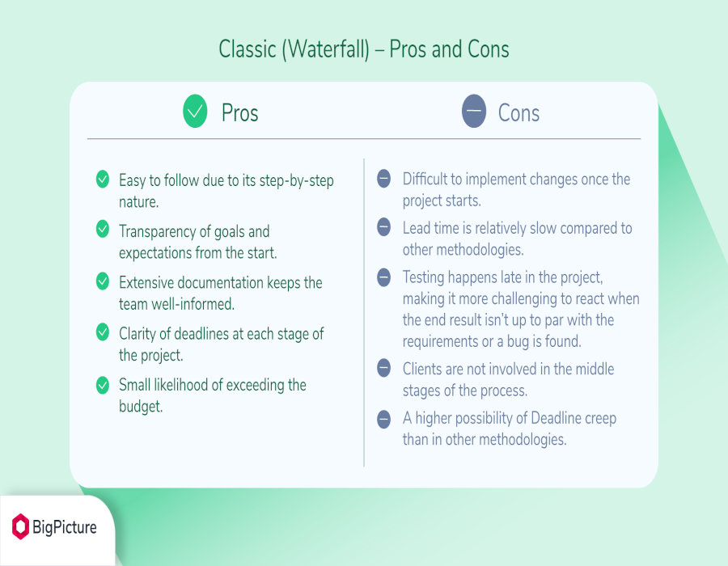

WATERFALL ARENDUSMUDEL
Waterfall mudel on tarkvaraarenduse jaotus lineaarseteks järjestikuteks faasideks. Need antud faasid on jaotud viieks:
1.Nõuete määratlemine
See etapp võib olla ka jaotatud kaheks - süsteemi analüüs (kõik see, mis konkreetset tarkvara ümbritseb) ja nõuete analüüs. Dokumenteeritakse süsteemi käitumine, jõudlus, liides jne
2.Süsteemi ja tarkvaraarendus
Keskendub põhilistele programmi omadustele nagu andmestruktuurid, tarkvara arhitektuur, liideste omadused ja protseduurilised ning algoritmilised detailid. Projekti kvaliteeti on võimalik hinnata. Tulemus dokumenteeritakse.
3.Teostus ja moodulite testimine
Projektis kirjeldatud süsteem programmeeritakse moodulite ja programmide kogumina ja need testitakse eraldi. Mida detailsem on projekt, seda lihtsam ja mehhaanilisem saab olla teostuse etapp.
4.Integratsioon ja süsteemi testimine
Programmid ja moodulid integreeritakse ning testitakse kogu süsteemi, peale testimist antakse toode kliendile. Testimisel keskendutakse nii loogilistele detailidele kui ka sellele, kas süsteem oma funktsionaalsuse osas nõudeid täidab (valideerimine).
5.Kasutamine ja hooldus
See on tavaliselt kõige pikem faas. Süsteemi muudetakse, kui kasutajad avastavad vigu, ümbrus ja töökeskkond muutuvad või klient vajab uut funktsionaalsust. Faas kordab kõiki eelnevaid faase olemasoleva süsteemi muutmise raames.
Skeem:

Võrdlus:
